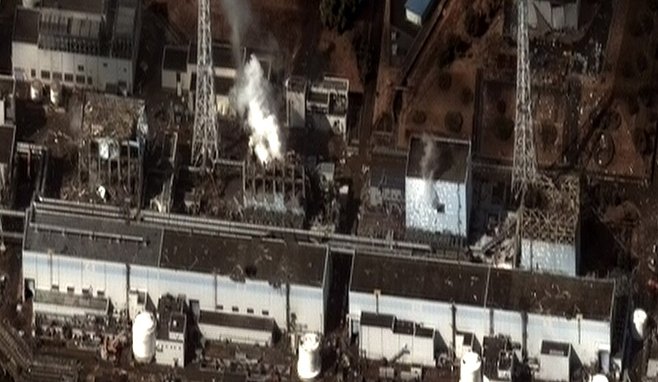

Why this page exists
The NRC is about to make one of the biggest changes to its radiation rules in decades, and most people outside the nuclear industry haven’t heard about it. In July 2026 the NRC proposed getting rid of ALARA, which is the rule that says nuclear facilities have to keep radiation doses “as low as reasonably achievable” even when they are already under the legal limit. The NRC kept the Linear No-Threshold (LNT) model though, which assumes that any dose of radiation, no matter how small, adds some cancer risk.
The reason they kept LNT surprised me when I first read about it. It wasn’t because the science proves LNT is right. It was because nobody has enough data to replace it. At the very lowest doses, below a few rem, the studies we have can’t tell whether the extra risk is real or zero. The Million Person Study could help fill that gap, and the Health Physics Society thinks it could be finished for around $5 to $10 million, but funding has been the main thing holding it back.
So I’m asking Florida engineers and energy policymakers to do one thing. Send a short letter to your members of Congress asking them to fund low-dose radiation research. There’s a letter you can copy at the bottom of this page.
What’s changing
This started in May 2025 when President Trump signed Executive Order 14300. The order told the NRC to rethink its use of LNT and ALARA and said that these models “lack sound scientific basis and produce irrational results.” On July 15, 2026 the NRC published its proposed rule, called “Reforming and Modernizing the NRC’s Radiation Protection Framework.” Public comments closed on August 31, and the final rule is expected sometime in November.
Here is what the proposed rule does, based on AIP’s coverage of it.
- The dose limits stay the same, which is 5 rem a year for workers and 100 millirem a year for the public.
- ALARA goes away. The NRC says it had turned into an expectation to cut dose any time it was possible, even when the benefit was tiny.
- Below the limits, licensees can weigh the cost against how much dose they would save. The rule uses $5,200 per person-rem as an example of a reasonable cost.
- LNT stays. The NRC still calls it the most appropriate model available.
Why Florida should pay attention
Florida has more at stake here than people might think. Turkey Point and St. Lucie supply part of the state’s power, and Florida is an Agreement State, which means the state itself regulates a lot of the people who use radioactive material, like hospitals and industrial radiography companies. The National Law Review points out that Agreement States may have to update their own rules to stay compatible once the NRC finalizes this. That puts some of this work on regulators and legislators right here in Tallahassee.
What the science says
LNT assumes that cancer risk goes up in a straight line with dose, all the way down to zero. Almost every radiation rule in the U.S. is built on it, including the dose limits that are staying in place.
I want to be upfront that LNT has real evidence behind it. The National Research Council’s BEIR VII report, which is one of the most cited reviews on low-dose radiation, found that the evidence is consistent with a linear risk that keeps going at low doses without a threshold. A newer study called INWORKS followed over 300,000 nuclear workers in France, the UK, and the U.S. and found that the risk of dying from solid cancer went up with dose, even for workers who had low total doses. I’m not going to pretend those studies don’t exist.
The problem is that most of what we know comes from people who got very high doses, like atomic bomb survivors. Craig Little of the Health Physics Society told AIP that below 10 rem we have “almost no data.” The NRC admits in its own rule that measuring low-dose risk has been a scientific challenge for a long time, but it kept LNT anyway because there isn’t a replacement that is ready to be used in regulations.
As an engineering student, this is the part that bothers me the most. In engineering you use safety factors all the time, but you base them on test data. ALARA was basically an extra safety factor on top of an assumption that nobody has been able to test. I don’t think the answer is to guess at a new threshold either. I think we need the data.
What the real numbers show
The chart below uses the actual results from INWORKS. Each dot is the study’s estimate of how much the risk of dying from solid cancer goes up per gray of dose, and each line shows the 90% confidence range around that estimate. The researchers ran the numbers on all workers first, then again using only workers below lower and lower doses.
Excess relative rate of solid cancer death per gray, with 90% confidence intervals, for each dose range. One milligray (mGy) is about 0.1 rem for the gamma radiation these workers received. Source is Richardson et al., “Cancer Mortality after Low Dose Exposure to Ionising Radiation in Workers (INWORKS),” BMJ, 2023, restricted dose range table.
Using all workers, the estimate is 0.52 per gray with a fairly tight range. As the data is cut down to only the lowest doses, the estimate stays above zero but the range gets much wider. For workers with less than 20 milligray, which is about 2 rem, the range runs from below zero to about 4, which means the study can’t tell whether the risk at that level is higher, lower, or zero.
I also have to be honest about what these numbers do not show. They do not show a threshold. If anything, INWORKS found a steeper slope at lower doses, and the atomic bomb survivor study found a straight-line relationship with no threshold and a significant increase in risk starting in the 0 to 0.2 gray range (Ozasa et al.). What the numbers do show is that below a few rem, where almost all public exposure happens, the uncertainty is too large to settle the question. That is the gap more research needs to close.
A short animation I made that walks through the INWORKS numbers step by step. Data source is Richardson et al., BMJ, 2023.
How big are these doses?
Most people already get a lot more radiation than the public limit just from living their lives. The NRC says the average American gets about 620 millirem a year from all sources, and around half of that is natural background radiation from radon, cosmic rays, and the ground. A chest X-ray is about 10 millirem and a chest CT scan is about 700. The EPA puts a cross-country flight at around 2 to 5 millirem. Meanwhile the public dose limit for NRC-licensed facilities is 100 millirem a year, and the limit for workers is 5,000.
This uses a log scale so the small and large doses fit on one chart. Orange bars are NRC limits. Sources are the NRC’s “Doses in Our Daily Lives” for the X-ray, CT, background, and average values, the EPA for the flight (middle of its 2 to 5 millirem range), AIP’s coverage of the proposed rule for the limits, and AIP’s interview with the Health Physics Society for the 10 rem line.
Try it yourself
Put in roughly how much you flew this year and any scans you had, and see how your own total compares to the public limit.
Rough estimate only. Background (310 millirem), chest X-ray (10), and chest CT (700) values come from the NRC. The 0.5 millirem per flight hour is my own estimate based on the EPA’s 2 to 5 millirem for a cross-country flight. For a more detailed version, try the NRC’s own Personal Annual Radiation Dose Calculator.
This doesn’t prove that low doses are safe. What it shows is that the public limit is already a small piece of what people get from everyday life, and that the question of what happens below 10 rem is worth actually answering.
Fukushima
In March 2011 an earthquake and tsunami caused a meltdown at the Fukushima Daiichi plant in Japan, and a large area around the plant was evacuated. Since then Fukushima Prefecture has counted more than 2,000 disaster-related deaths. These are deaths from the stress and health problems that came with living as evacuees. The United Nations Scientific Committee on the Effects of Atomic Radiation, on the other hand, found no adverse health effects among Fukushima residents that could be directly tied to the radiation.
More than 2,000 people died from the evacuation. The radiation itself has not been directly linked to health effects among residents.
I don’t want to overstate this. American regulations had nothing to do with those deaths, and some evacuation near the plant was necessary. My point is only that fear of radiation can cause harm too. When every dose is treated as dangerous, it is easy to make decisions that hurt more people than the radiation would have, and without low-dose data there is no good way to know where that line is.


Arguments against the rule
A lot of groups oppose this rule, and I think some of their points are fair. The Union of Concerned Scientists says LNT is accepted internationally and that dropping ALARA could lead companies to cut corners on things like shielding. Edwin Lyman, their director of nuclear power safety, said the rule would expose workers and the public to more radiation “just to save the nuclear industry money.” HEAL Utah, a community group, points to the Downwinders and uranium workers in Utah who got sick during the Cold War.
Here is where I land on those. The Utah workers were exposed before real protections existed, and I haven’t seen anyone arguing to go back to that. The dose limits in the new rule aren’t changing. What is changing is the extra requirement to keep pushing below those limits with no clear stopping point.
I actually agree with the critics that LNT shouldn’t be thrown out just because some people don’t like it. That is why this page asks for research and not for a new threshold. If the research shows LNT holds up at low doses, the critics will have better evidence than they do now. If it shows there is a threshold, the rules can change based on that. I would rather know than keep arguing about it.
If you want to read a supporting argument from a policy group, the America First Policy Institute’s public comment on the rule also asks for a structured scientific review of LNT.
What you can do
It should take about five minutes.
- Look up your U.S. Representative and Florida’s two Senators.
- Copy the letter below and paste it into each of their contact forms. Please add a sentence of your own, because personal letters get more attention than copies of the same one.
- Send this page to one coworker or colleague who works in engineering or energy policy.
About me
I’m Will Yaeger, a chemical engineering student at Florida State in Tallahassee. I made this page for my ENC 1101 class, but the letter is real and I would really like people to send it. [ADD YOUR OWN REASON FOR CARING ABOUT THIS HERE]
I’m not a radiation scientist. Everything on this page comes from government documents, peer-reviewed studies, and science policy reporting, and it is all linked in the sources section so you can check it. I also tried to include the best arguments from people who disagree with me, because I don’t trust pages that only show one side and I don’t expect you to either.
If I got something wrong, email me at [YOUR EMAIL].
Sources
- Fukushima Prefectural Government. “Steps for Revitalization in Fukushima.” Dec. 2019.
- National Research Council. Health Risks from Exposure to Low Levels of Ionizing Radiation: BEIR VII Phase 2. National Academies Press, 2006.
- “NRC Proposes Removing ALARA from Radiation Protection Rules.” The National Law Review, 15 July 2026.
- “NRC Proposes to Weaken Radiation Protections, Putting Workers and Communities at Risk.” Union of Concerned Scientists, 2 July 2026.
- Ozasa, Kotaro, et al. “Studies of the Mortality of Atomic Bomb Survivors, Report 14, 1950–2003.” Radiation Research, vol. 177, no. 3, 2012, pp. 229–43.
- Richardson, David B., et al. “Cancer Mortality after Low Dose Exposure to Ionising Radiation in Workers in France, the United Kingdom, and the United States (INWORKS).” BMJ, vol. 382, 2023.
- United States, Environmental Protection Agency. “Radiation Sources and Doses.”
- Trump, Donald J. “Ordering the Reform of the Nuclear Regulatory Commission.” The White House, 23 May 2025.
- United Nations Scientific Committee on the Effects of Atomic Radiation. UNSCEAR 2020/2021 Report. Vol. 2, Annex B, 2022.
- United States, Nuclear Regulatory Commission. “Reforming and Modernizing the NRC’s Radiation Protection Framework.” Federal Register, vol. 91, 15 July 2026.
- United States, Nuclear Regulatory Commission. “Doses in Our Daily Lives.”
- Zhang, Clare. “NRC Affirms Science Behind Radiation Standards.” FYI, American Institute of Physics, 10 July 2026.
- Zhang, Clare. “NRC Mulls Changes to Radiation Safety Requirements.” FYI, American Institute of Physics, 17 Mar. 2026.
- Also mentioned on this page are the HEAL Utah action alert and the America First Policy Institute public comment.